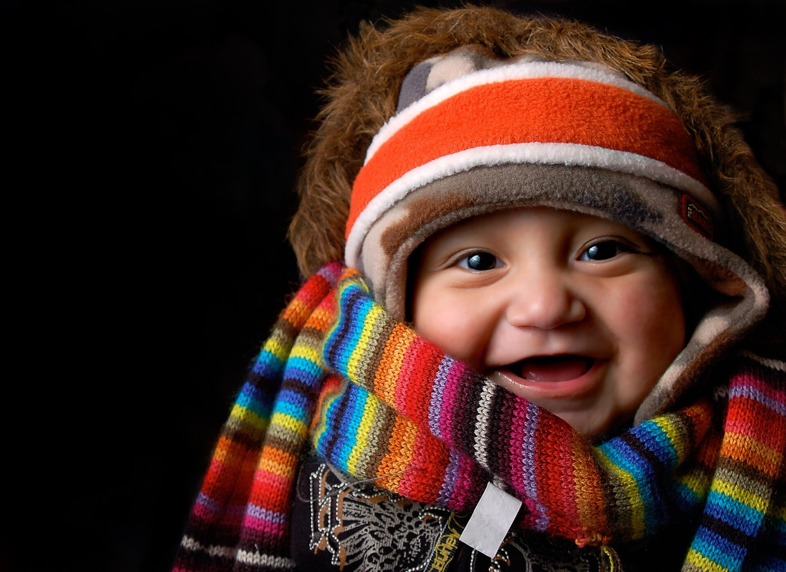
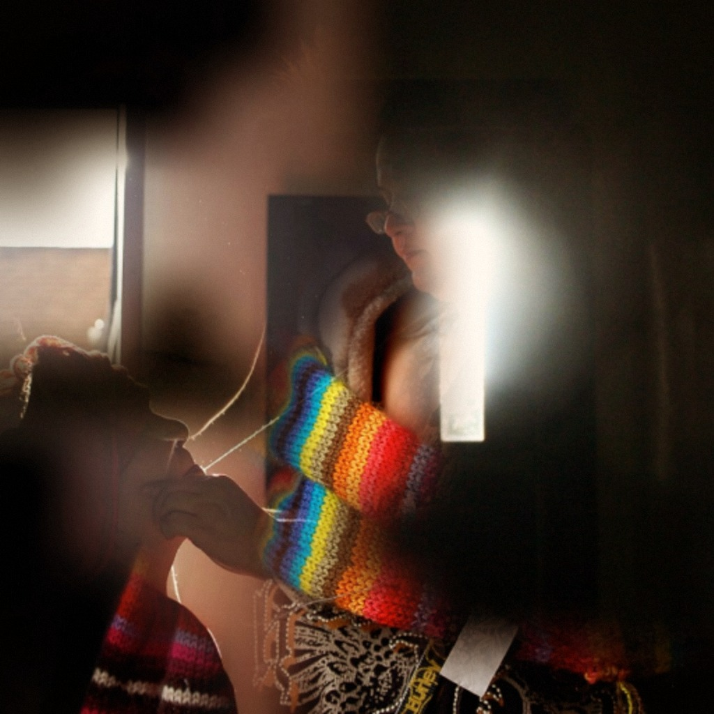

V1 · 围着一口锅以锅为圆心，照片、旋钮和旧菜都在伸手可及的地方。STATIC STUDY / 1440 × 1000
记忆厨房
慢慢做饭
TONIGHT'S RECIPE · 第 004 锅
把午后，慢慢煮暖。
照片是食材，想念是那一点火。

切片 · 适量 · 味道：牵挂

捣碎 · 少许 · 味道：甜

腌制 · 大量 · 味道：安静
拖进锅里，或点选照片
本锅 3 / 5 张 · 可多选
三段日子，
慢慢熬暖。文火，别着急。
烹饪中 · 让想念再咕嘟一会儿
这道菜叫把午后煮暖
做法 / 小火慢熬
火候 / 不急不慢
备料 → 下锅 → 烹饪 → 出锅
留一口回味01 DISH / 回看

把旧日子煮暖上一锅 · 炖 / 文火 / 三味
有些日子，值得再回味一次。